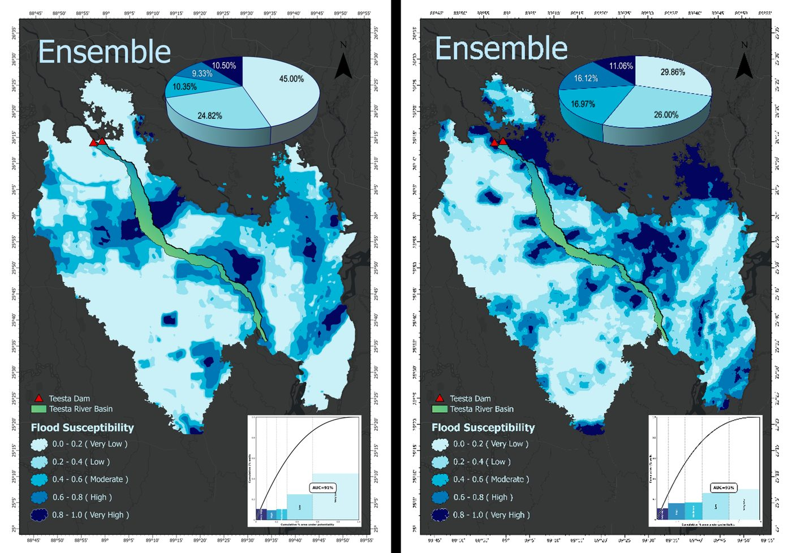
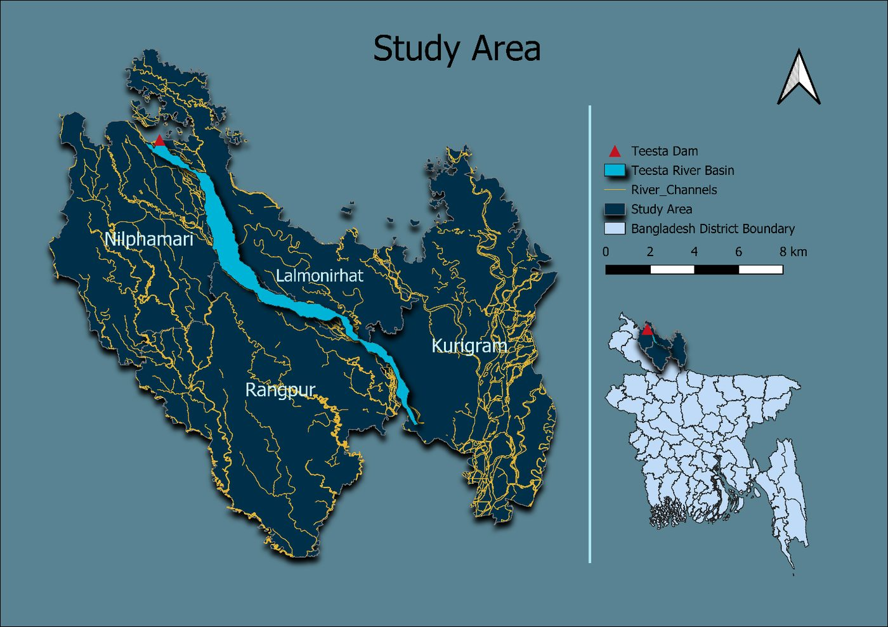
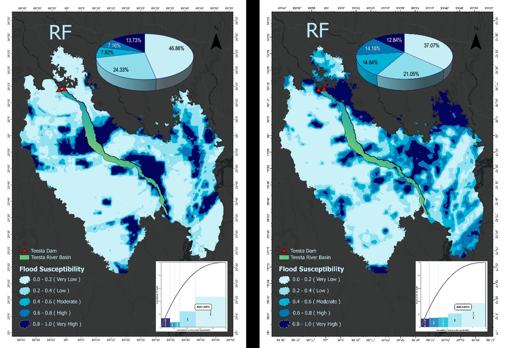
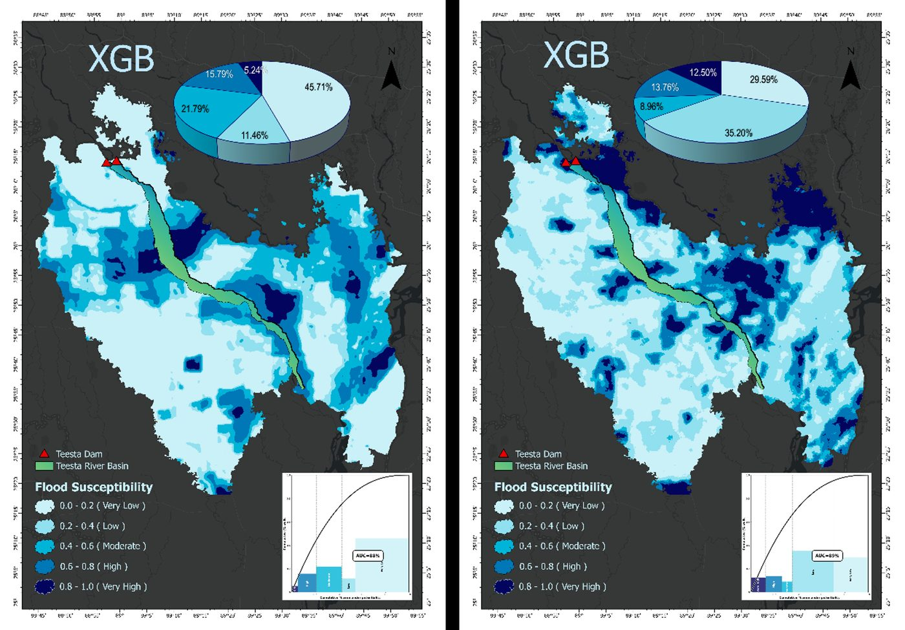
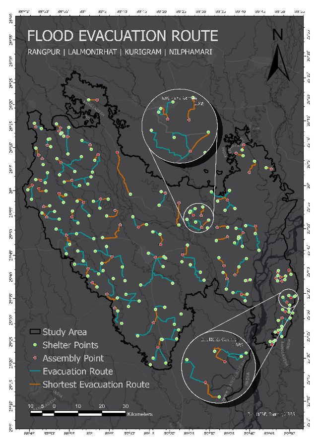
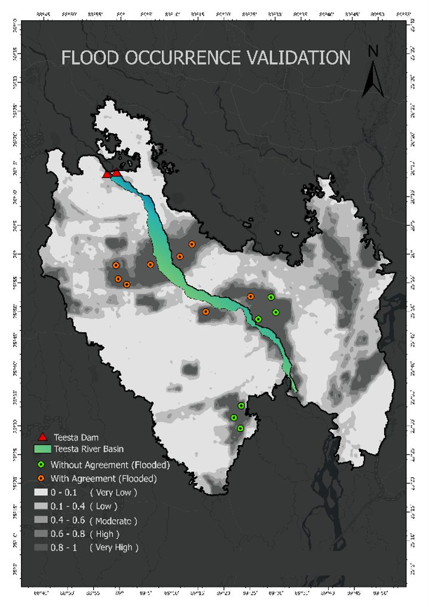

My undergraduate thesis maps flood susceptibility across a critical river basin in northern Bangladesh using SAR data and ensemble machine learning. The analysis compares susceptibility before and after upstream dam openings and traces the shortest evacuation routes for affected communities.





